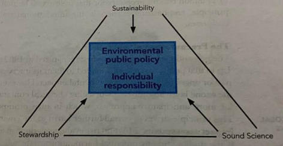
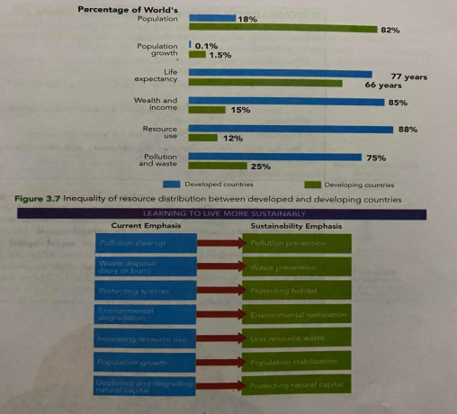
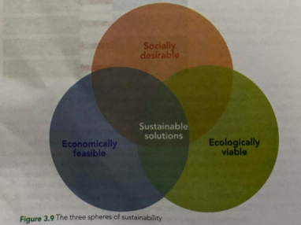
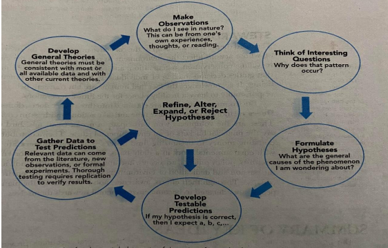

The desired outcome of environtmetal science should be clear-the-health of the planet must be restored and maintained for the current generation and the genarations to come. This is a Herculean task that requires careful planning and precise execution. In this lesson, we took at the three vital themes that will direct societies towards long-term sustainability: sustainability, sound science, and stewardship.
These themes translate to three action plans that have to be undertaken to heal the planet of its environmental woes. Sound science is necessary in order to understand the environment. Practicing sustainability is vital for maintaining the productivity of the environment. Lastly, all citizens of the Earth must take it upon themselves to act as stewards of the environment, protecting the planet from harm.
The term "sustainable" was initially used to define the limits of exploitation of biologically renewable resources like fisheries, forests, and groundwater. It meant harvesting at the rate the same resource can be regenerated. However, sustainability is a more complex concept, encompassing broader scales like forest ecosystems. Sustainable cutting of trees can lead to increased soil erosion, altered water yield, altered wildlife and plant habitat, and biodiversity effects. These changes can affect local communities' economic livelihoods and affect the biophysical content and socioeconomic aspects of resource exploitation.
Sustainability in human society is crucial for a healthy and happy population that takes care of its environment. However, our current society often exhibits environmental degradation and decline in biodiversity. In developed countries, resources are used leisurely, resulting in pollutants and wastage. In developing countries, the environment is heavily exploited for resources, leading to unequal distribution of goods and services. Sustainability can be defined based on three spheres: economic, social, and ecological. The economic sphere focuses on the growth of businesses and infrastructures, relying on natural resources, while the social sphere focuses on cultural forms and community infrastructures. The ecological sphere focuses on environmental preservation, ensuring that economic and social spheres respect the environment's integrity. Sustainable solutions are represented by the intersection of these three spheres.
Environmental issues are rooted in compromised biological processes. In order to create solutions for problems, the problems have to be analyzed in a valid and reliable manner. The scientific method is an important tool that methodically tests ideas and assesses data to answer scientific questions. Scientific inquiry is a powerful way to understand nature. Knowledge obtained through the scientific method which has been subjected to the peer review process by the scientific community is called sound science.
The third theme is stewardship or the collective responsibility for environmental quality by all whose actions affect the
environment. It refers to protecting the environment through recycling, conservation, regeneration, and restoration. Stewardship
incorporates an ethic that guides decision-making of individuals to benefit the environment and other human beings. It
acknowledges the fact that humans are but transient beings, and that we have a responsibility to leave a healthy planet for the
future generations.
Environmental stewards are classified into three types: doers, donors, and practitioners. Doers are individuals who make time and
take action to address an environmental problem. These are the volunteers who participate in ocean clean ups, bird census, etc.
Donors are the financial backers of an environmental cause. Their contributions can range from donating money to organizing fund
raisers. The practitioners are the people involved with environmental work in a daily basis. These are the staff for environmental
groups, scientists, policy officers, advocates, and any other stakeholder individual or group. It is by the passion and dedication
of environmental stewards that the environment is saved from collapse. Through their efforts, awareness about the state of the
planet is raised and more people are educated to become environmental stewards themselves.